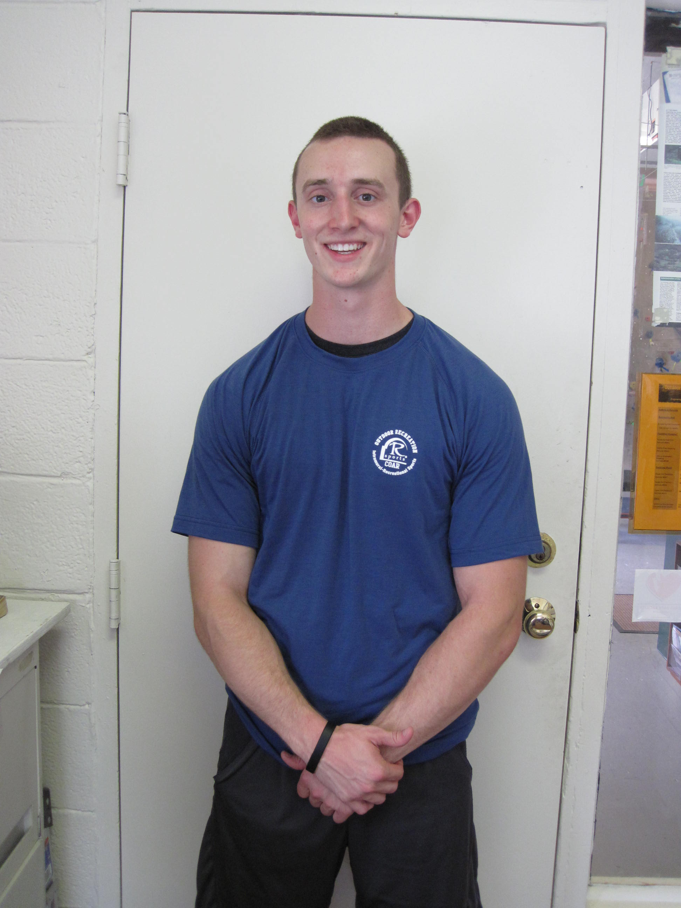
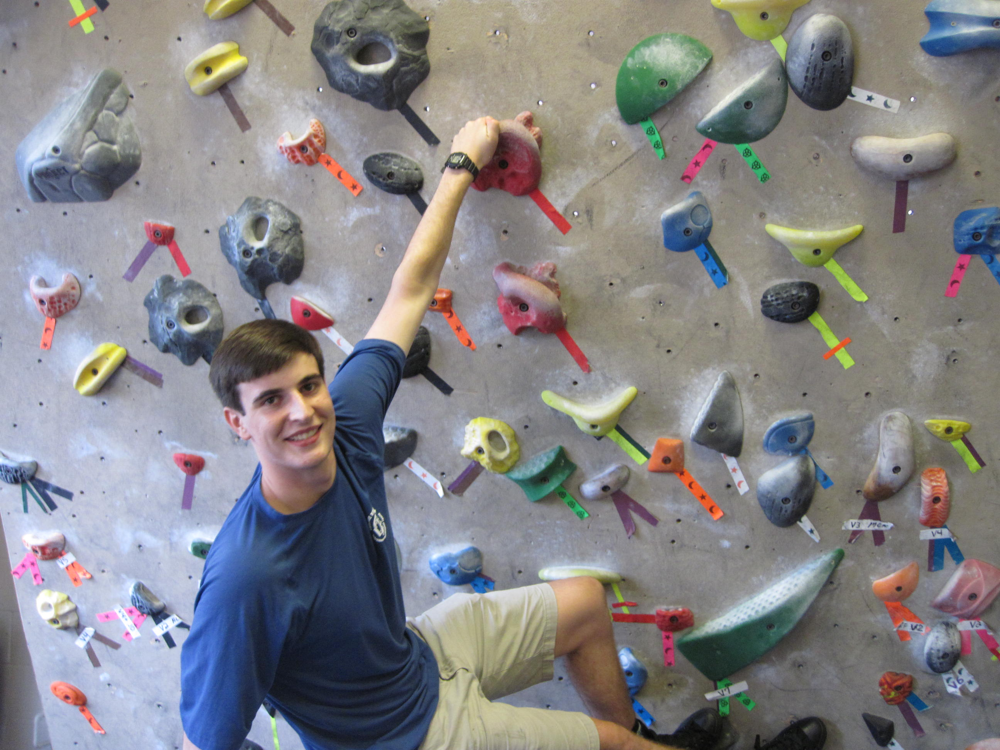

Meet Your Orientation Leaders!
After participating in the first-ever COAR trip last summer, Zach returned this year to lead the program that made him see UVA in a new light. A rising second year, he’s very much undecided but has enjoyed classes in Global Studies, Youth and Social Innovation, and Urban and Environmental Planning and fears the day when he’ll actually have to make a life decision. In his free time, he juggles writing music, fixing up bikes, and exploring Cville with pals. Unanimously voted sixth-coolest leader, Zach can’t wait to get out and hit the trails. While not a grizzled thru-hiker nor a rugged outdoorsman, he's definitely, totally 100% competent (just don’t ask 2A what happened when he tried to set up the slackline).
Bridget Murphy is a rising second year from Portsmouth, Va. A student in the Architecture School, Bridget spend lots of her time with friends in the studios of Campbell Hall being a bit of a goof ball (and doing a little homework, too)! When she's not being an ASchool kid, she loves exploring all that UVa and Cville have to offer- from food to antiques to trails. She's lucky to play club volleyball, work at the Outdoor Recreation Center, and give back to the community with Freedom by Design, a service organization started in the Architecture School. On free days you can find her hiking the beautiful Blue Ridge mountains, or maybe just taking a nap in one of the gardens-- in either case, she'll probably have a bit of music playing in the background.
Brady is second year at UVA who was lucky to claim a spot on the first ever COAR trip last year. As a participant, Brady was blown away by the friendly faces and scenic hikes met on the trails and now is back to reinvest in the program as a leader. Brady love the outdoors, music, and anything that involves breaking a sweat. He writes and perform songs for local music festivals, spends his free time exploring the nearby National Park and hiking trails, and maps out Charlottesville via a regular running routine. Brady is also extremely grateful to be a part of Chi Alpha Christian Fellowship and can't wait to get back to UVA and start another amazing year.

Linda is a rising 4th year majoring in nursing and minoring in religious studies. She loves the outdoors and views hiking and yoga as a way to relieve stress and be a better caretaker for others. Fun fact: Linda was never outdoorsy until she came to college. Now, she's a trip leader for COAR, a supervisor at Slaughter recreation center, and a facilitator for the UVA ropes course at Poplar Ridge.
Joe Bruce is a second year in the Engineering school. Apart from studying mechanical engineering, he is also a member of Alpha Phi Omega (a co-ed service fraternity) and the Outdoors Club. A self-proclaimed “pretty outdoorsy person", Joe loves mountain biking, backpacking, kayaking, and climbing. As a boy scout, Joe has had experience leading groups on camping trips, and loves COAR because it allows first years to gain outdoor experience and make new friends.
Christina is a Second Year Biomedical Engineering major at UVA. Originally from Delaware, she has enjoyed getting to explore the outdoors in Virginia through the Outdoors Club and the Ski Club. She has also delved into Biomedical Design by building specialized devices for children with disabilities, is an EMT through CARS-Rescue Squad, and helps teach people with disabilities to ski through Therapeutic Adventures.